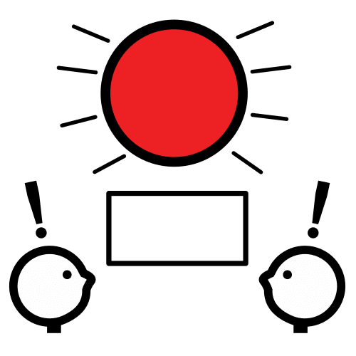
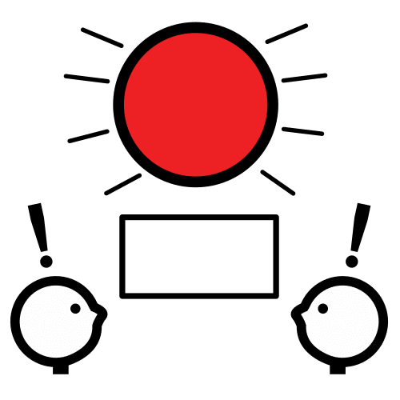

DICTIONARY
Encourage

Host
Definition:
Person who has guests at home.
Persona que tiene invitados en casa.
Example:
A good host takes care of all the details of a party.
Un buen anfitrión se encarga de todos los detalles de una fiesta.
Spanish word:
Anfitrión
Audio:
Leaflet
Definition:
Piece of paper with some kind of information on it.
Trozo de papel con algún tipo de información en él.
Example:
All attendees of the exhibition received a leaflet.
Todos los asistentes a la exposición recibieron un folleto.
Spanish word:
Folleto
Audio:
Meet
Definition:
To see and talk to someone for the first time.
Ver y saludar a alguien por primera vez.
Example:
I meet new people every weekend.
Conozco gente nueva cada fin de semana.
Spanish word:
Conocer
Audio:
Treasure
 Definition:
Definition:
Valuables stored in a site.
Objetos de valor guardados en un sitio.
Example:
Life is a treasure.
La vida es un tesoro.
Spanish word:
Tesoro
Audio:


 Visiting is when you go to someone's home.
Visiting is when you go to someone's home.  Think of things to show the student.
Think of things to show the student. 1. Nice places to go.
1. Nice places to go. 3. Monuments to see.
3. Monuments to see. You can be a great host.
You can be a great host.
 Can you tell me the name of your hometown?
Can you tell me the name of your hometown?  Which place is most popular in your city/town?
 Which place is most popular in your city/town? Where do you like to hang out with your friends?
Where do you like to hang out with your friends?